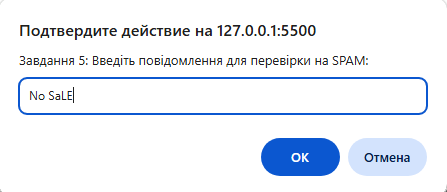
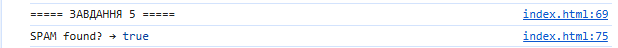

console.log("===== ЗАВДАННЯ 5 ====="); function checkForSpam(message) { let text = message.toLowerCase(); return text.includes("spam") || text.includes("sale"); } let userMessage = prompt("Завдання 5: Введіть повідомлення для перевірки на SPAM:"); console.log("SPAM found? →", checkForSpam(userMessage));

